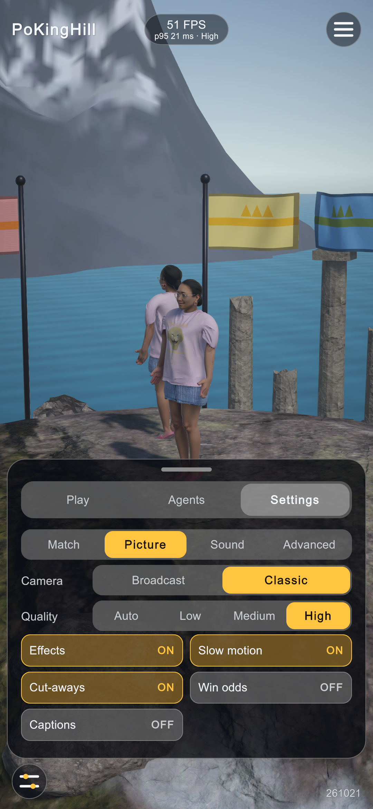
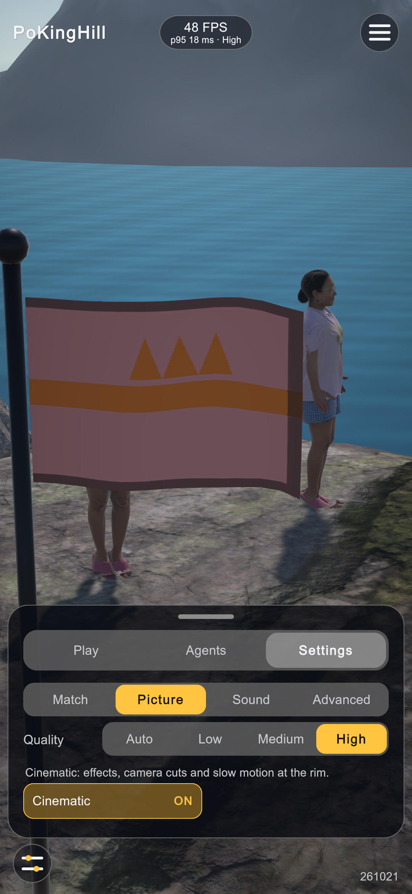
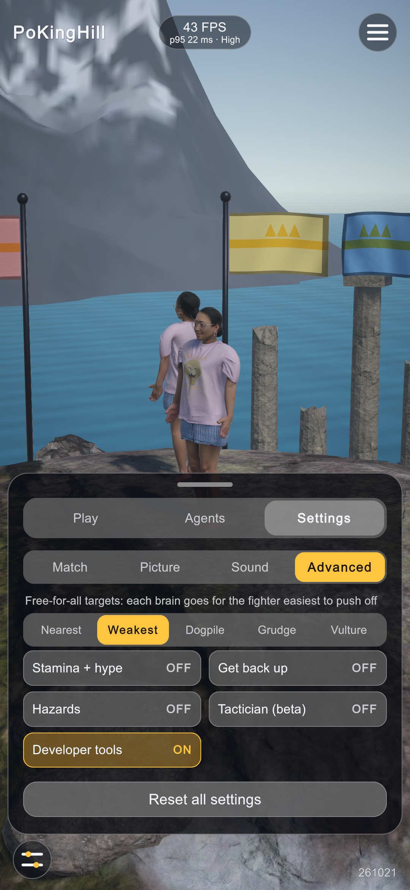
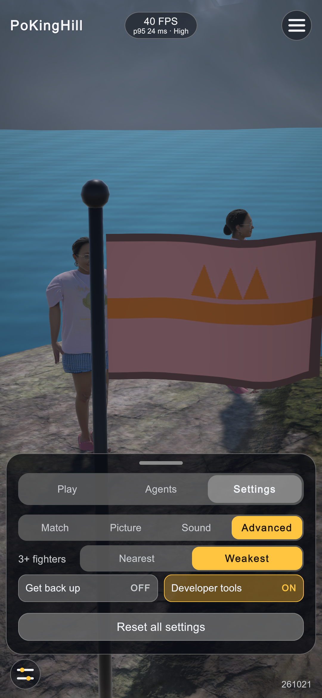
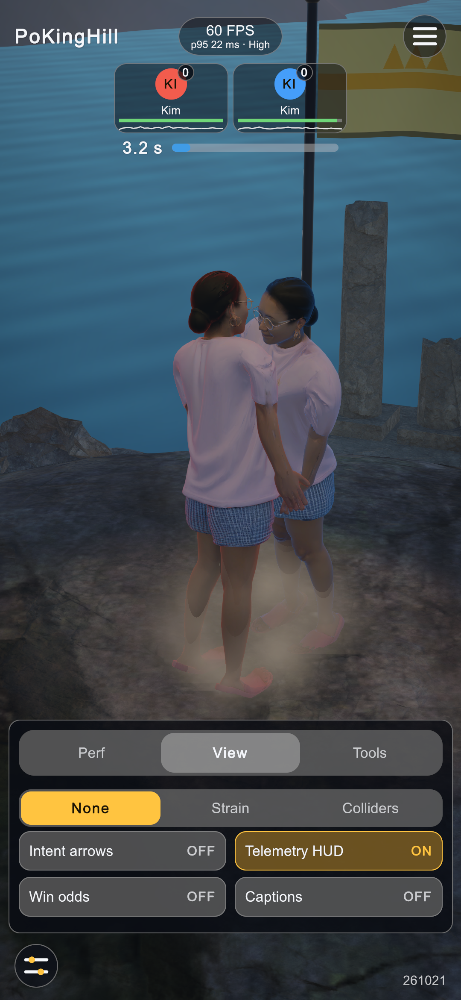
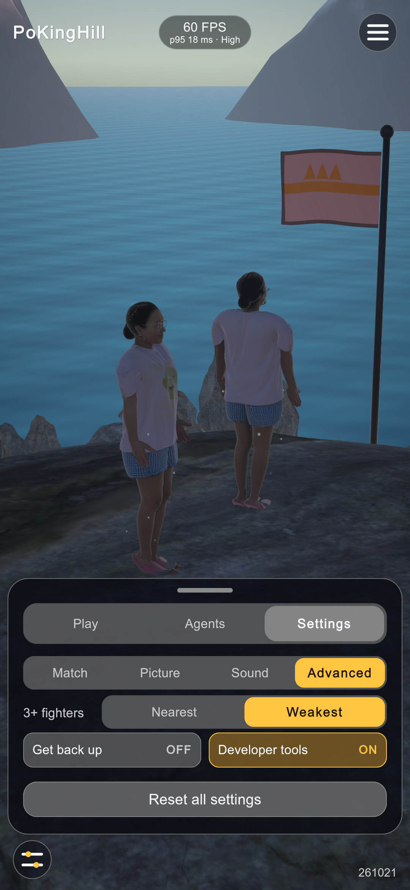
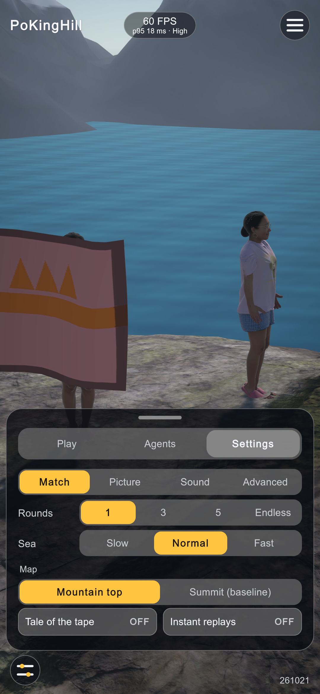
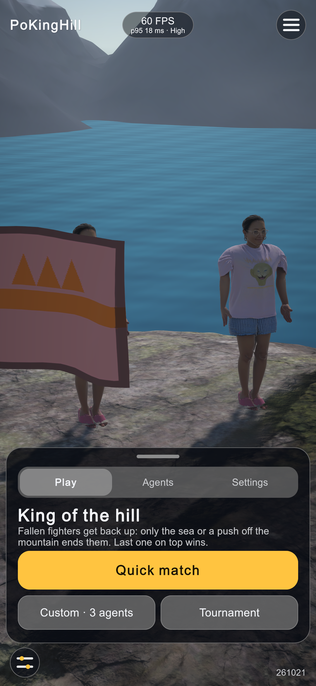
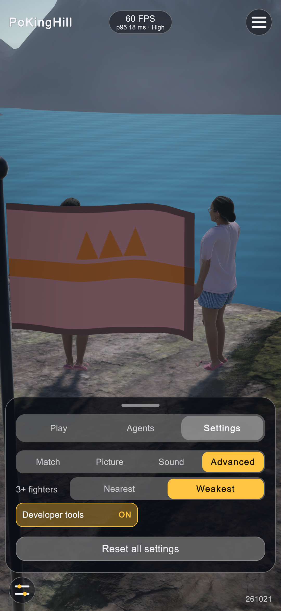

Cleanup, 2026-10-21
Ten cleanup options from the CLEAN prompt: fewer settings and features, a hand-composed game scene, consistent names, unused files archived. Verified in the open editor: EditMode 46/46, PlayMode 7/7, Kim's 200-round duel gate through the new scene path, a played quick match with no errors in the log.
Settings: Picture
Camera (Broadcast / Classic) is gone with the Classic camera. Effects, Slow motion and Cut-aways are one Cinematic switch (on by default). Win odds and Captions moved to the developer panel.


Settings: Advanced
Targeting is down from five modes to two (Nearest, Weakest). Stamina + hype, Hazards and the Tactician (beta) are cut.


Developer panel and play



Follow-up: CPU only, the hill rule
Following your direction: every agent is a brain (the player-steered walker, its stick and the "You play" switch are gone), and every fighter gets up after a fall. There is no count and no limit, and a fighter is out only when it leaves the mountain top; the sea still ends a round that nobody wins by a push. The "Get back up" switch is gone because the rule is always on. Kim's hill-rule gate (200 rounds): Python decided 100 %, median 6.88 s (5.48 / 8.11); Unity decided 100 %, median 6.77 s (5.55 / 8.37): pass. EditMode 46/46, PlayMode 7/7.


What was done
| # | Option | Result |
|---|---|---|
| 1 | Commit the play-test work | Committed with its line endings intact. |
| 2 | Duplicate get-up brains | 3 <body>_getup1_policy.onnx archived (byte-identical to getup_policy.onnx; a one-off manual export, so no script change). |
| 3 | Models diet | Kim's old gate brains and their reference trajectories archived. Changed: the G1 Duelist and Rammer stay, because the free-for-all gate's opponent pool (mirror of eval.py --rung r5ffa) looks them up by name. |
| 4 | Retire G1 multi-body scenes | Narrowed: koth_5p/koth_6p (old game scenes: testbeds, dumps, imports, 47 MB) archived. koth_4p/koth_7p stay: they are the free-for-all gate scenes. |
| 5 | Disk | cleanup_unused.sh now lists every archive/* and the CLI capture folder (824 files, 69 MB; --builds adds the 335 MB player build). Not done: training/runs holds only final, referenced checkpoints (CLAUDE.md keeps the G1's). SCREENSHOTS reports are linked by path from the run log, so they were not moved. |
| 6 | Hand-composed game scene | GameSceneBuilder (365 lines) and BuildDuelDemo removed. The new Editor/GameScene.cs provides RefreshBrains (roster only), RefreshBodies (MuJoCo tree, runners and skins only) and Compose (gate scenes as copies of the game scene). The prefab's unused Steam emitter is removed. |
| 7 | Names and docs | DemoDirector → MatchDirector, Demo_duel.unity → Game.unity (same GUIDs), roster class Fighter → Agent, field fighters → bodies (FormerlySerializedAs), private fields _seat/_wins/_score/_last → _agentAt/_bodyWins/_agentWins/_status. tasks.md, the run log and the training report moved to DOCS/. privacy-policy.html stays at the root (a public URL may point at it). |
| 8 | Cut the Tactician | Tactician, Tactics, MlpNet, 11 _mlp.bytes, export_mlp.py, its gate and tests archived; the training-side r4tactic rung is untouched. |
| 9 | Advanced rules | Hazards and Stamina + hype cut (with hype events, steam, quake rumble, gust wind and the Fatigue overlay); Dogpile/Grudge/Vulture targeting cut, along with three ledger queries only they used. Changed: ProjectilePool stays, because the MJCF holds the boxes it parks and the hold-parity gate fires them. |
| 10 | Picture settings | As above; the Classic camera (MatchCamera) is cut, so Broadcast is the only camera. |
| + | Test fix | EveryComponentLivesInAFileOfItsOwnName only read the top level of Scripts/ and had checked nothing since the scripts moved into subfolders. It now reads them recursively. |
Numbers
| Before | After | |
|---|---|---|
| C# in Assets/PoKingHill | 61 files, 8,535 lines | 55 files, 7,194 lines (−16 %) |
| Settings on the menu (Picture + Advanced) | 7 choices and 10 switches | 2 choices and 3 switches |
| Set aside in archive/clean-261021 | 410 files (824 with .meta), 69 MB: 6 scripts, the scene builder, 26 brains/weights/trajectories, 2 testbed scenes and their imports, 1 Python script | |
| Kim duel gate (200 rounds) | Python: decided 100 %, median 6.67 s (5.54 / 7.92) | Unity: decided 100 %, median 6.72 s (5.43 / 7.93): pass |